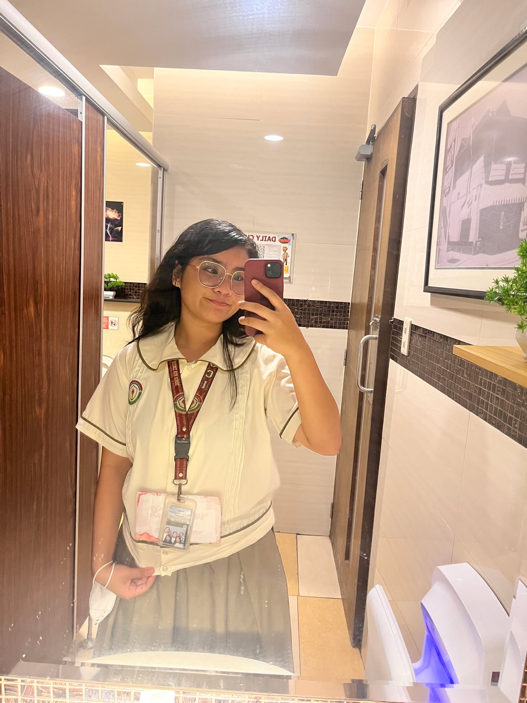
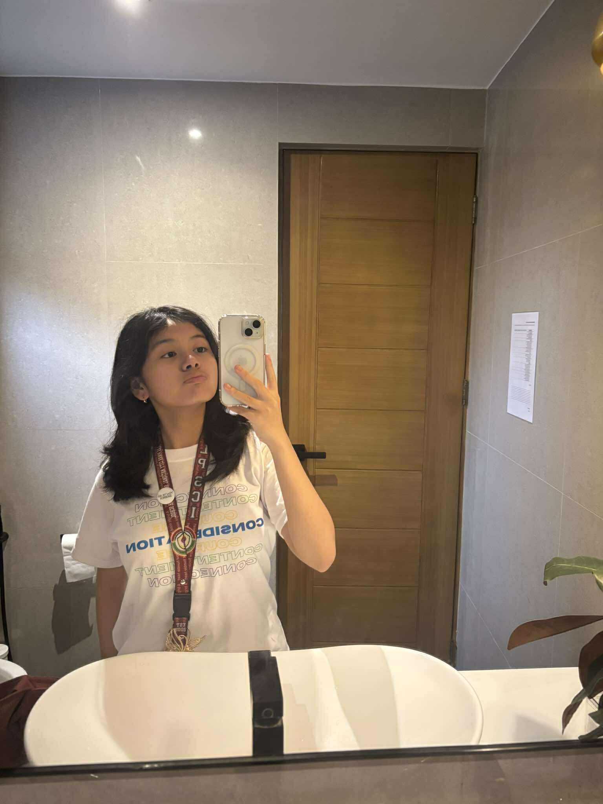
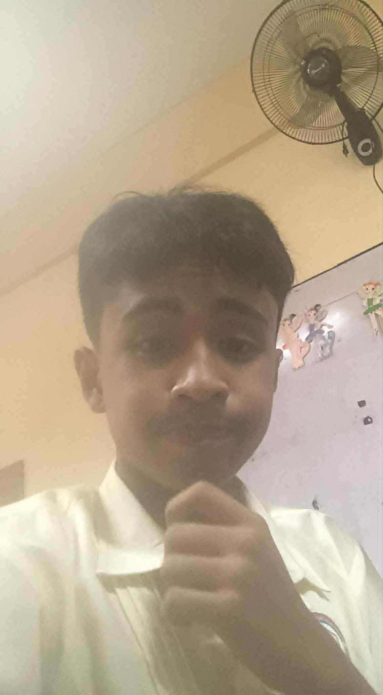
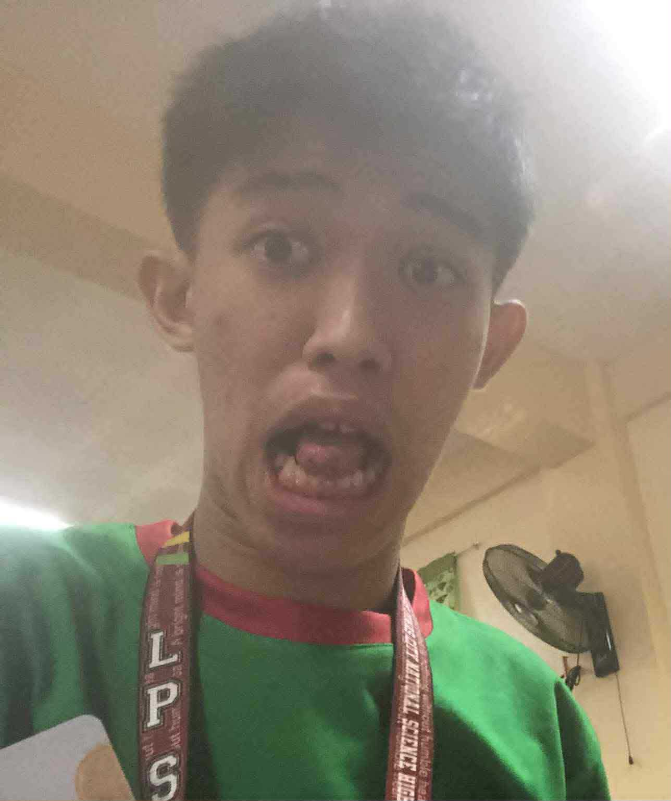
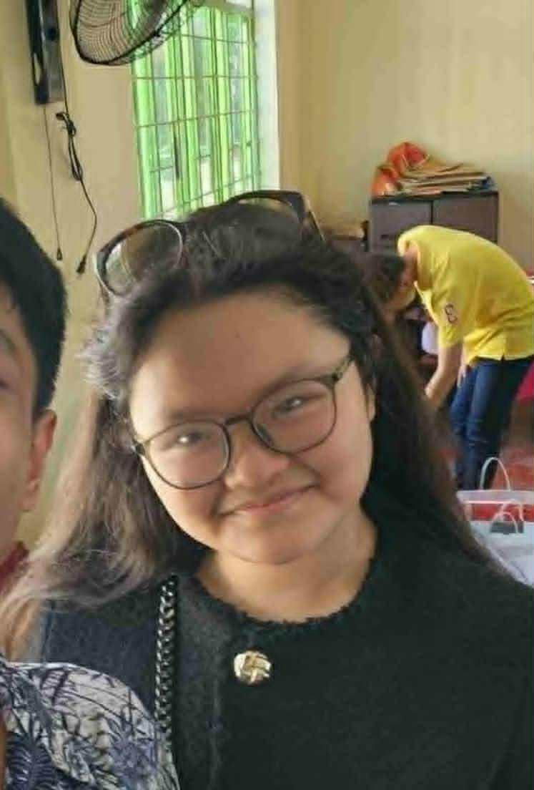
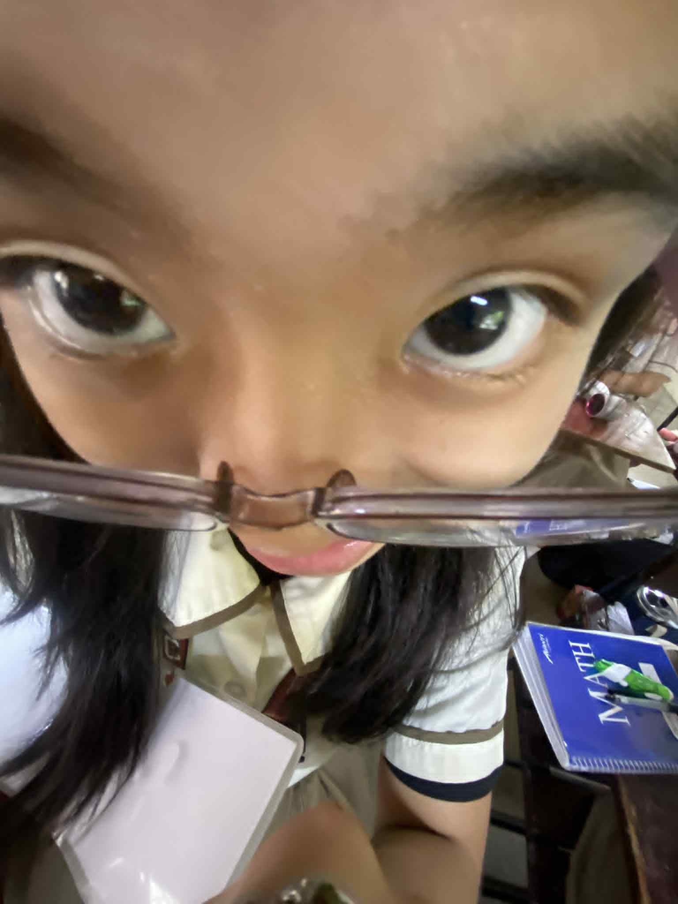
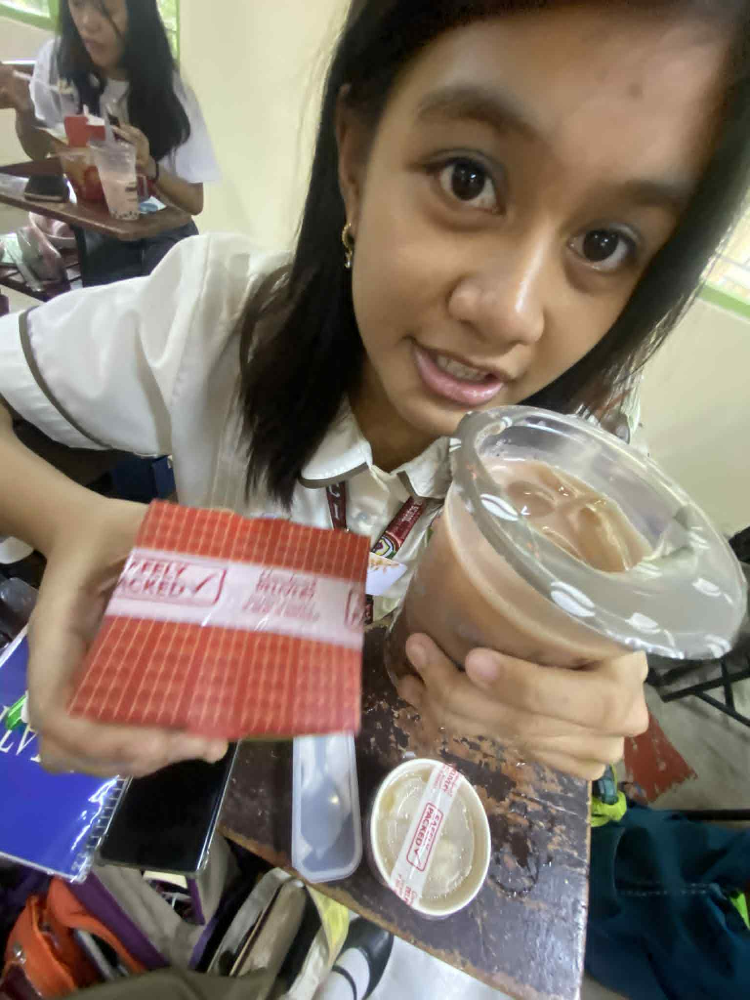
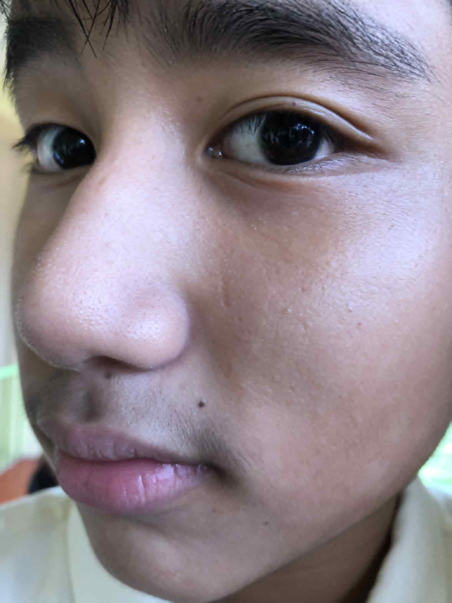
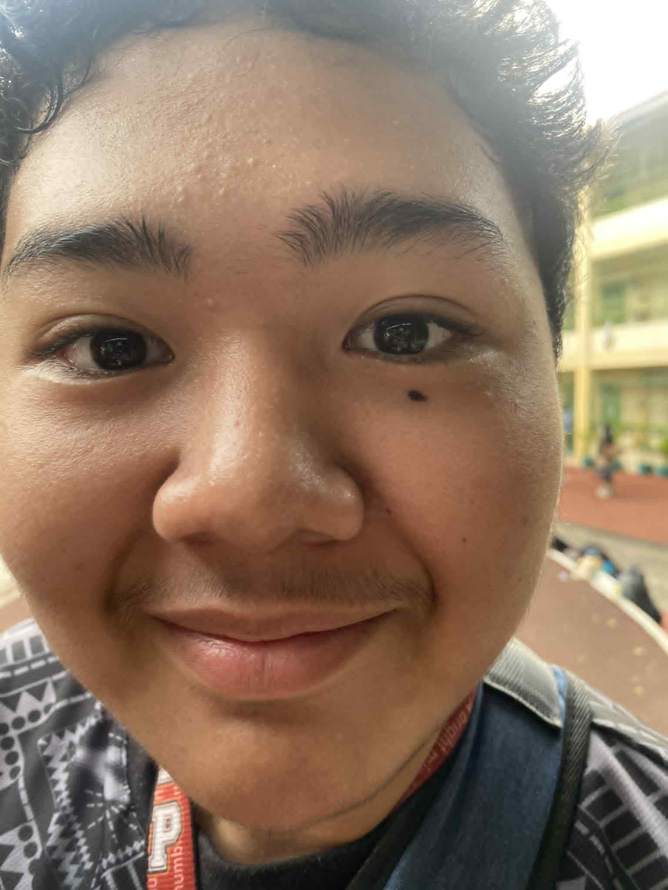
Inspired by Vincent van Gogh's Starry Night
A look into my memories
These are the constellations that make me who I am
I was born in a middle class household, which I am very grateful for. I'm also grateful to the fact my family is complete, maybe even more than complete. When I was growing up I had a grandmother named Nenita N. Antolin, I used to call her Mamu, and she would constantly spoil me with gifts, food, and money. However unfortunately we lost her last May 2020. My grandfather, Benjamin J. Antolin, would also always spoil me but not as much as my grandma. I call my grandpa, Papap, for reasons I don't know until now. I have two titas, Tita Janeth and Tita Roan. Both of them also spoiled me to the max, especially Tita Janeth who would always give me money every 2 weeks until now and would always buy me food and gifts randomly. I also have an older sister, Vivien, who is 10 years older than me and we have a normal sibling relationship with occassional quarrels, but even she would buy me random stuff and give me money. My dad, Vincent N. Antolin, also loves spoiling me with what I want although it is in moderation. He bought maybe 80% of what I have right now. He bought me numerous phones over the years, numerous tablets, laptops, and PCs. He especially loved buying gadgets because he's a computer engineer and loves fiddling with codes and stuff. My mother, Roselyn is my the most supportive person in my life. She always supports me in the competitions I join, the things I do, the sports I play. Although she doesn't spoil me meterially, she does spoil me with emotions.
Step inside the gallery of my digital creations — each lesson, an exhibit; each project, a masterpiece born under the glow of learning.
These events allowed me to grow — to learn lessons beyond the classroom and discover who I am through shared experiences.
During Buwan ng Wika and ASEAN Month, I realized how unity and culture can thrive when people come together to celebrate our identity. I learned that honoring language isn’t just about speaking it — it’s about understanding the stories and values it carries. I participated by creating visuals and joining performances that promoted our national pride. If I were to teach this, I’d say it’s a reminder that every dialect and culture deserves recognition. Events like this remind us that we share one soul as a nation, no matter how diverse we are.
The Science Fair taught me that curiosity and teamwork can lead to discoveries far greater than expected. I learned how to turn questions into experiments and ideas into results. I participated by helping gather data and presenting with my group. If I were to teach this, I’d emphasize how curiosity is the root of learning. This event showed me that science isn’t just about answers — it’s about the thrill of finding them together.
Intramurals reminded me of the power of unity, sportsmanship, and fun. I learned that victory isn’t everything — what matters most is how we support and respect one another. I joined in the games and cheered with my classmates, feeling the true spirit of belonging. If I taught this, I’d say that teamwork builds character more than competition does. This event is important because it strengthens our bonds as students and friends.

Teacher’s Day taught me the value of gratitude and appreciation. I helped prepare gifts and took part in performances to honor our mentors. I realized how much effort teachers put into shaping our lives, and it made me more thankful for their dedication. If I taught this to others, I’d say that respect and kindness go a long way. This event matters because it reminds us that no knowledge exists without someone willing to teach.
During the Senior High School Intramurals, I learned how different grade levels can unite through excitement and shared passion. I helped in organizing and cheering for our house, realizing how collaboration goes beyond age and section. If I taught this, I’d say it’s proof that spirit and teamwork are universal. This event showed me how pride and friendship can blend into something truly inspiring.
The Division Schools Press Conference showed me the beauty of words and the power of storytelling. I learned that journalism isn’t just about writing — it’s about expressing truth and emotion through language. I joined the editing and layout process and saw how teamwork brought our stories to life. If I were to teach this, I’d say that every voice matters. This event is important because it gives young writers a place to be heard and inspires us to speak with purpose.
Explore the lessons that helped me understand the world of economics — how supply, demand, and choices shape our daily lives.
 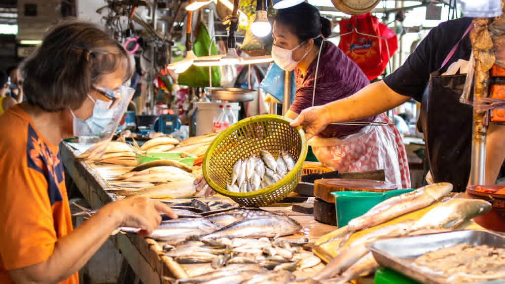
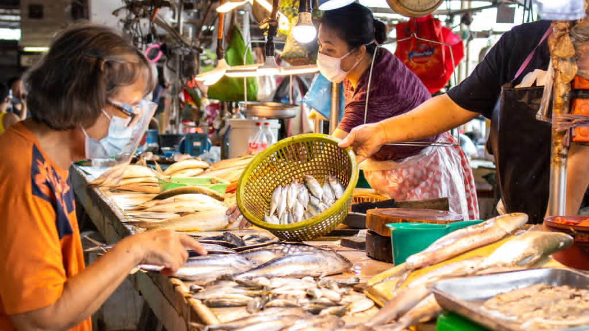


Socialization
On the first day of Grade 7, I instantly became friends with Xyrus because he was my seatmate, that makes him my very first friend in LPSci. We were talking about cars and sports and that's how we became friends. Behind us sat Lucas, with me being me I talked to him like I already knew him. We became friends after we joked around about elementary school and girls. He is my very first bestfriend in LPSci, all the way until now. Also conveniently seated right behind us was Enzo, he was really noisy and I was asking him to keep quiet. Somehow we ended up having a conversation about cars, so now there were 4 of us talking and laughing at the back of 7-Benevolence. Around 3 days later when we had proper seating arrangements, I met Chaello. We became friends quickly and after 1 skit presentation for MAPEH, she became my "daughter" and around maybe a year later we became bestfriends along with Sefie. I don't even know how I got close with Sefie, it just happened so quickly. A year and a half ago we started talking because of Chaello. I never talked to her in Grade 7 because she had a crush on me and now suddenly we were close and bestfriends. And that made BenjaFieChae (our trio). When I got put into Connection there were only two of us from Benevolence, me and Chiara. I didn't really know what I was gonna do to make friends but when I went to Brigada I instantly made a friend with 3 people. I didn't who they were before that but you know, boys being boys, we became friends. They were Kiel Reyes, Edward Mendez, and Renz Amadure. Now that Kiel and Edward got separated from us, me and Renz got closer because there isn't anyone else who's as kulit as us. Back in Grade 8 as well, I heard there was a transferee. I told Lucas "We have to make this guy our friend" and he reluctantly agreed because he's an introvert. I went to Courage and started talking to him, and from that day forward we would always greet eachother. His name is Gelo, and now that we're classmates we got even closer and even made our own trio: Me, Renz, and Him. Also in Grade 8, I met Zoe and we instantly became friends, which is weird because if you know Zoe then you would know she rarely becomes friends with people. We bonded over wealth, money, and politics, as well as hatred for certain things. She then introduced me to Lorraine, who in turn introduced me to Romina. Back in Grade 8 they were my friend group aside from Kiel, Edward, and Renz. In fact, I was with Zoe, Romina, Lorraine, and Chiara for most of my Grade 8 time, and there were multiple instances when people thought I had a crush on either one of them.